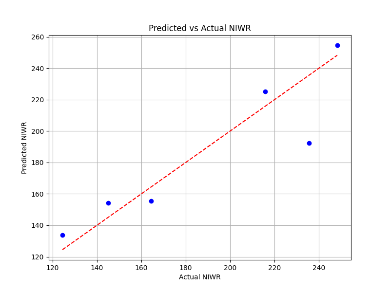

NIWR Prediction using Random Forest
Forecasting Irrigation Water Needs in Chitwan, Nepal
Overview
This project uses a Random Forest model to predict seasonal Net Irrigation Water Requirement (NIWR) in Chitwan, Nepal, based on climate data (2002–2015) for winter, spring, and monsoon seasons, forecasting up to 2023. Code will be published on GitHub after the paper is accepted for publication. This work is part of ongoing research. Contact me at prasanna1dahal@gmail.com for details.
Methodology
- Data Collection: Utilized climate data (precipitation, temperature) and remote sensing indices (ESI, LST) from 2002–2015.
- Model Development: Trained a Random Forest regressor with features including Evaporative Stress Index (ESI), Land Surface Temperature (LST), and precipitation, validated with observed NIWR data.
- Evaluation Metrics: Assessed model performance using RMSE (19.29), Pearson correlation (0.91, p=0.011), and Spearman correlation (0.94, p=0.0048).
- Forecasting: Projected NIWR trends for 2021–2023 with 90% prediction intervals.
Key Findings
- Developed a Random Forest model using features like ESI, LST, and precipitation to predict NIWR.
- Achieved high accuracy with RMSE of 19.29, Pearson correlation of 0.91 (p=0.011), and Spearman correlation of 0.94 (p=0.0048), indicating strong model performance.
- Projected NIWR trends for 2021–2023, showing seasonal variations in water demand.
- Identified key climate factors influencing irrigation needs, supporting water management planning.
Visuals
Figure: Projected seasonal NIWR (2021–2023) with 90% prediction intervals for Chitwan, Nepal. Image from ongoing research. Contact for usage permissions.
Future Work
- Extend the model with additional climate variables (e.g., humidity, wind speed) for improved accuracy.
- Validate predictions with field data from 2023 onwards.
- Publish code and dataset on GitHub post-publication, along with a detailed methodology paper.